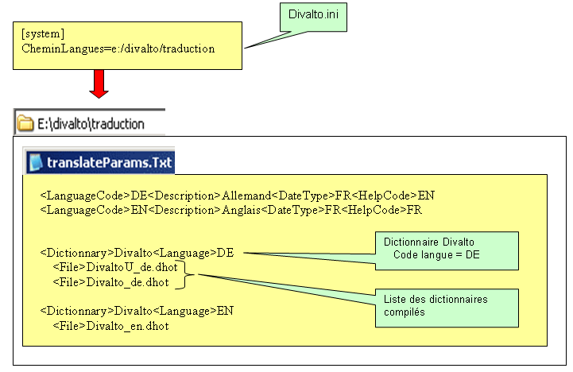

Le chapitre [System] de Divalto.ini (utiliser xDivaltoMajIni) doit contenir l'entrée suivante : CheminLangues=xxxxx.
CheminLangues indique un répertoire dont le nom est au format Windows. Si ce répertoire est situé sur un serveur, il faut ici mettre un nom de partage Windows.
Le répertoire pointé par CheminLangues contient :
- le fichier paramètre TranslateParams.txt
- les dictionnaires compilés (.dhot).
Le fichier paramètres TranslateParams.txt contient trois parties :
- une partie information qui indique les codes langues disponibles ainsi que le format d'affichage/saisie des dates et le code pour les fichiers d'aides
- une partie donnant la liste des fichiers pour chaque couple dictionnaire-langue.
- une partie indiquant les langues disponibles pour les données contenues dans les fichiers (la traduction des champs multilingues fait l'objet d'un livre à part).
Dans l'exemple ci-dessus :
- l'utilisateur a le choix entre deux langues étrangères, DE et EN
- le dictionnaire Divalto - DE est composé de deux fichiers : DivaltoU_de.dhot et Divalto_de.dhot
- le dictionnaire Divalto - EN est composé d'un fichier : Divalto_en.dhot.
Remarques importantes
Pour le paramétrage des applications Web, voir Installation d'un site Web multilingue dans la documentation d'installation d'Harmony.
Quand on parle de dictionnaire pour les programmes Diva (instruction Translate) ou pour les masques, il s'agit toujours de l'entrée <Dictionnary> du fichier TranslateParams.txt.
Par exemple, la traduction de tous les libellés de l'ERP Divalto est cherchée dans le dictionnaire Divalto : si le code langue courant est DE, ce sont les fichiers DivaltoU_de.dhot et Divalto.dhot qui seront utilisés ; si le code langue courant est EN, c'est le fichier Divalto_en.dhot qui sera utilisé.
Divalto livre deux dictionnaires. Un dictionnaire pour le système (nommé Harmony) et un dictionnaire pour les applications (nommé Divalto).
Voir aussi : Paramétrage